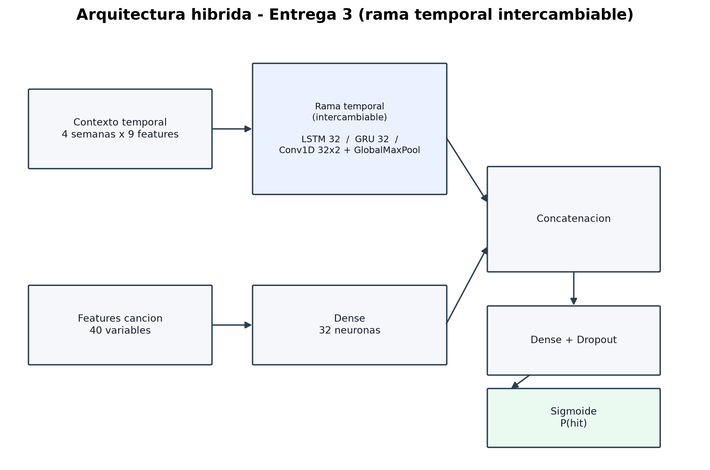
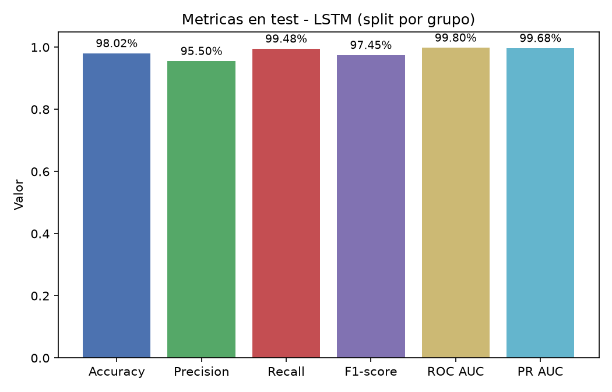
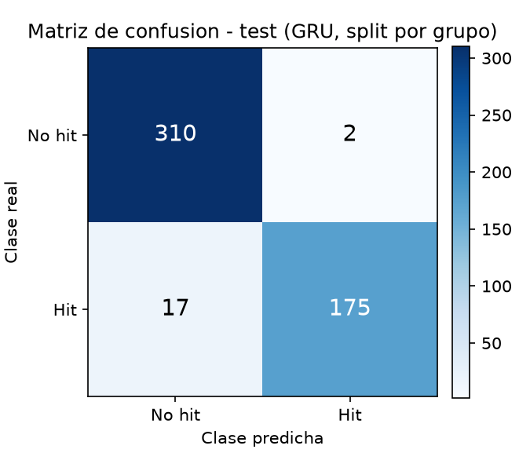
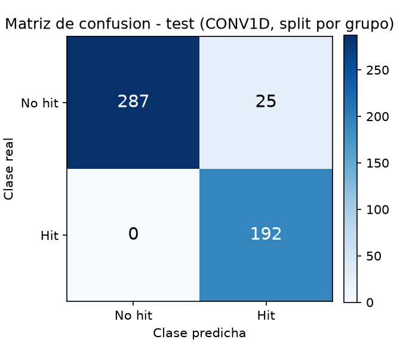
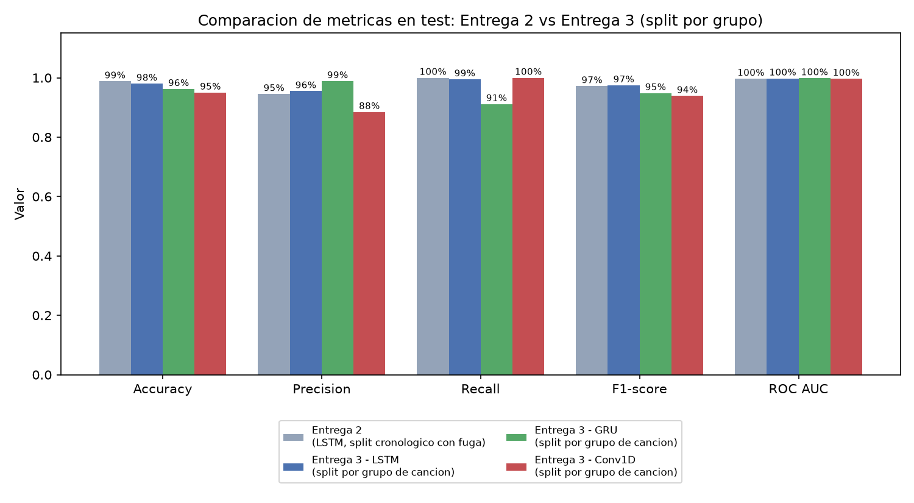

1. Objetivo de esta entrega
A partir de la evaluacion de la Entrega 2, el docente senalo dos observaciones concretas a resolver:
(1) ajustar la preparacion de los datos para evitar informacion duplicada, y (2) evaluar el uso de
otros tipos de redes para la rama temporal, como GRU y/o ConvNet. Esta
entrega aborda ambos puntos y compara los resultados obtenidos contra el prototipo anterior.
2. Flujo general de trabajo
3. Correccion aplicada: fuga de informacion (no la repeticion en si)
En la Entrega 2, una misma cancion hit generaba una fila de entrenamiento por cada semana que permanecio en el ranking Billboard: de 1000 filas hit, solo 98 correspondian a canciones distintas (~10 semanas repetidas por cancion, en promedio). Las 1450 canciones no-hit ya eran unicas.
Primera iteracion (descartada): se probo eliminar toda repeticion, dejando una unica fila por cancion. Al revisarlo se detecto que este enfoque tiraba una senal real del fenomeno (que un hit permanece varias semanas en el ranking es informacion legitima, no ruido) y reducia demasiado el tamano muestral: de 769 a apenas 79 canciones hit, con solo 20 en el conjunto de prueba. Se concluyo que ese enfoque resolvia el sintoma tirando la esencia del problema.
Solucion final aplicada: se mantiene el dataset completo a nivel de cancion x semana (2019 filas, 769 hits, igual que en la Entrega 2), y el split de entrenamiento/validacion/ prueba se hace por grupo de cancion: todas las semanas de una misma cancion quedan garantizadas dentro de un unico subconjunto. Asi se elimina la fuga de informacion sin sacrificar tamano de muestra ni senal temporal real.
4. Split por grupo de cancion
Como las canciones hit permanecen en el ranking una cantidad de semanas muy variable (entre 1 y 25), un split por grupo aleatorio simple podria desviarse de las proporciones buscadas. Se implemento un algoritmo de asignacion voraz (greedy bin-packing): las canciones de cada clase se ordenan aleatoriamente y luego por cantidad de semanas en forma descendente, y cada cancion se asigna integramente al subconjunto con mayor deficit respecto de su proporcion objetivo (60% train / 15% validation / 25% test, semilla fija 42).
| Conjunto | Filas | Hits | Canciones distintas | % del total |
|---|---|---|---|---|
| Entrenamiento | 1212 | 462 | 786 | 60,0% |
| Validacion | 303 | 115 | 207 | 15,0% |
| Prueba | 504 | 192 | 336 | 25,0% |
5. Arquitecturas comparadas
Se generalizo el modelo hibrido de la Entrega 2 para poder intercambiar la capa de la rama temporal, manteniendo igual el resto de la red (rama de la cancion, concatenacion, cabeza de clasificacion), de forma de poder atribuir las diferencias de desempeno unicamente al tipo de capa temporal usado.

6. Resultados obtenidos (conjunto de prueba, 504 filas, 192 hits)
Umbral de decision ajustado por maximizacion de F1 en el conjunto de validacion, igual criterio que en la Entrega 2. Con 192 hits en test (vs. 20 en la primera iteracion descartada), las diferencias entre arquitecturas son mucho mas confiables estadisticamente.
| Arquitectura | Umbral | Accuracy | Precision | Recall | F1-score | ROC AUC | PR AUC |
|---|---|---|---|---|---|---|---|
| LSTM recomendada | 0,39 | 98,02% | 95,50% | 99,48% | 97,45% | 99,80% | 99,68% |
| GRU | 0,84 | 96,23% | 98,87% | 91,15% | 94,85% | 99,86% | 99,76% |
| Conv1D | 0,13 | 95,04% | 88,48% | 100,00% | 93,89% | 99,70% | 99,45% |
Metricas de la arquitectura recomendada (LSTM)



7. Comparacion contra la Entrega 2
7.1 Comparacion de los datasets y del split
Antes de comparar metricas, conviene comparar el dataset y el criterio de split, ya que la correccion de esta entrega esta en la metodologia de evaluacion y no en el volumen de datos:
| Aspecto | Entrega 2 | Entrega 3 |
|---|---|---|
| Unidad de analisis | Una fila por cancion y semana en el ranking | Una fila por cancion y semana en el ranking (sin cambios) |
| Filas totales | 2019 | 2019 |
| Canciones hit unicas | 98 (en 1000 filas) | 79 con contexto completo (en 769 filas) |
| Proporcion de hits (filas) | 38,1% | 38,1% (sin cambios; no se elimina informacion) |
| Metodo de split | Cronologico por fecha, a nivel de fila | Por grupo de cancion (greedy bin-packing), estratificado por clase |
| Tamano del conjunto de prueba | 252 filas (12,5%, por debajo del minimo) | 504 filas (25,0%, cumple el minimo) |
| Riesgo de fuga de informacion | Si: una cancion podia tener semanas en train y en test | No: cada cancion (con todas sus semanas) queda en un unico subconjunto |
- Elimina la fuga de informacion sin descartar filas: se resuelve en el split, no en el dataset.
- Conserva el tamano de muestra completo (2019 filas, 769 hits), evitando el problema de la primera iteracion, que habia reducido la clase positiva a 79 canciones.
- Preserva la senal real del fenomeno: que un hit permanece varias semanas en el ranking es informacion legitima, no un artefacto a eliminar.
- Cumple el minimo de 25% de datos de prueba exigido por la catedra (la Entrega 2 usaba 12,5%), con proporciones finales de 60,0% / 15,0% / 25,0% gracias al algoritmo de asignacion voraz.
- Permite una comparacion de arquitecturas mas confiable: 192 hits en test (vs. 20 en la primera iteracion) dan mayor robustez estadistica a las diferencias observadas.
7.2 Comparacion de metricas
| Version | Accuracy | Precision | Recall | F1-score | ROC AUC |
|---|---|---|---|---|---|
| Entrega 2 (LSTM, split cronologico con fuga) | 98,81% | 94,55% | 100,00% | 97,20% | 99,69% |
| Entrega 3 - LSTM (split por grupo) | 98,02% | 95,50% | 99,48% | 97,45% | 99,80% |
| Entrega 3 - GRU (split por grupo) | 96,23% | 98,87% | 91,15% | 94,85% | 99,86% |
| Entrega 3 - Conv1D (split por grupo) | 95,04% | 88,48% | 100,00% | 93,89% | 99,70% |

7.3 Por que un split aleatorio simple no alcanza: variante descartada
Se evaluo tambien una variante intermedia: mismo dataset completo (cancion x semana, sin
deduplicar), pero con train_test_split estratificado por clase a nivel de FILA, sin
agrupar por cancion. Se descarto porque vuelve a permitir que una misma cancion tenga semanas en
mas de un subconjunto: se verifico que 56 canciones quedan repartidas entre entrenamiento y
prueba (43 entre train/val, 41 entre val/test) — por ejemplo, "Calling My Phone" de Lil
Tjay y 6LACK aporta 10 filas repartidas entre ambos conjuntos. Reproduce el mismo problema
metodologico de la Entrega 2, sobre un dataset distinto.
| Version (arquitectura LSTM) | Accuracy | Precision | Recall | F1-score | ROC AUC |
|---|---|---|---|---|---|
| Entrega 2 (split cronologico, con fuga) | 98,81% | 94,55% | 100,00% | 97,20% | 99,69% |
| Variante descartada (split aleatorio por fila, con fuga) | 99,41% | 98,46% | 100,00% | 99,22% | 99,63% |
| Entrega 3 final (split por grupo, sin fuga) | 98,02% | 95,50% | 99,48% | 97,45% | 99,80% |
8. Lecciones aprendidas
- No toda repeticion de datos es "informacion duplicada" en sentido negativo: que una cancion aparezca en varias semanas del ranking es parte real del fenomeno (la persistencia de un hit); el problema no era la repeticion en si, sino permitir que cruzara la frontera train/test.
- La primera solucion no siempre es la correcta: deduplicar por completo parecio al principio la forma mas directa de "eliminar duplicados", pero el resultado (79 hits en vez de 769, solo 20 en test) mostro que resolvia el sintoma tirando informacion valiosa del problema real.
- El lugar correcto para resolver una fuga de informacion suele ser el split, no el dataset: un split por grupo (por entidad, aqui la cancion) conserva todos los datos y a la vez garantiza que ninguna entidad se filtre entre subconjuntos.
- Con grupos de tamano desigual, un split aleatorio simple no alcanza: se necesito un algoritmo de asignacion voraz (greedy bin-packing) para que las proporciones de filas por subconjunto se acercaran al objetivo 60/15/25.
- Mejores metricas no siempre significan un mejor sistema, y peores metricas no siempre significan un sistema peor: lo importante es que la metrica sea confiable. Aqui, una evaluacion mas estricta dio metricas similares o mejores que la Entrega 2 — el mejor escenario posible: rigurosidad sin sacrificar desempeno.
- Aislar la variable en comparacion simplifica el analisis: generalizar el codigo para intercambiar solo la capa temporal permitio atribuir las diferencias de desempeno al tipo de capa, no a otros cambios simultaneos.
- "Usar el dataset completo" no alcanza si el split sigue siendo por fila: se
probo una variante que mantenia el dataset sin deduplicar (correcto) pero seleccionaba train/val/test
con
train_test_splitestratificado por clase a nivel de fila, sin agrupar por cancion. Se encontro que 56 canciones quedaban repartidas entre entrenamiento y prueba, reproduciendo la misma fuga de la Entrega 2 sobre un dataset distinto, con metricas aun mas altas (F1 99,22%) precisamente por esa fuga. Esto confirmo, con un segundo caso independiente, que evitar la duplicacion de canciones y evitar la fuga de informacion entre canciones son dos cosas distintas: conservar todas las filas es necesario pero no alcanza si el criterio de split no agrupa por la entidad que se repite.
9. Archivos importantes
| Archivo | Para que sirve |
|---|---|
Entrega N° 3_ Evolucion del Sistema Inteligente.docx |
Documento final de la entrega (formato oficial de la catedra). |
tracks_charts_grouped_dataset.csv |
Dataset final: cancion x semana completo (2019 filas), sin deduplicar. |
split_asignacion_canciones.csv |
Que subconjunto (train/val/test) quedo asignado a cada cancion. |
scripts/build_grouped_dataset.py |
Script que construye el dataset completo cancion x semana. |
scripts/train_all_architectures_grouped.py |
Split por grupo de cancion + entrenamiento/evaluacion de LSTM, GRU y Conv1D. |
resultados_lstm_grouped/, resultados_gru_grouped/, resultados_conv1d_grouped/ |
Modelo entrenado (.keras), preprocesadores, metricas, predicciones y figuras de cada arquitectura (version final). |
comparacion_arquitecturas_grouped.csv / .md |
Tabla comparativa de metricas de las 3 arquitecturas (version final). |
tracks_charts_dedup_dataset.csv, resultados_lstm/, resultados_gru/, resultados_conv1d/, comparacion_arquitecturas.csv/.md |
Primera iteracion (deduplicacion total), conservada como registro del proceso; reemplazada por la version final descripta arriba. |
Todo lo generado para esta entrega esta agrupado en la carpeta Entrega 3.